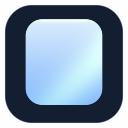

Better Visual for YouTubePrivacy Policy
Better Visual for YouTube adds Liquid Glass surfaces, Ambient Light, optional procedural sky backgrounds, and interface animations to desktop YouTube. You can use the extension without creating any developer account.
Information processed on your device
The extension reads desktop YouTube page structure and player layout locally in your browser to apply glass styles and visual effects. When colour-reactive features are enabled, Ambient Light, video tint sampling, and black-bar auto-cropping sample rendered video/thumbnail pixels solely on your device in memory.
Better Visual for YouTube does not collect or transmit browsing history, YouTube account credentials, watch lists, search queries, or video frames to any developer-operated server. There is no third-party analytics SDK, ad tracking, or remote crash telemetry.
Storage & browser profile synchronization
Your preferences, active style profile, and optional chosen city name/coordinates are saved locally via chrome.storage.local. When your browser enables profile sync, appearance preferences, style profiles, and your optional chosen city/coordinates are also mirrored to chrome.storage.sync so settings stay consistent across your signed-in Chrome or Edge browsers. Weather caches and failure backoff timestamps stay strictly local in chrome.storage.local. Sync is handled exclusively by your browser vendor; QuanNguyen operates no backend server and cannot access your synced settings.
Optional weather requests & third parties
- Optional Live sun & weather: Disabled by default. Only after you grant optional host permission and enable Live sun & weather, the extension requests forecast data from
https://api.open-meteo.com/*using your chosen city's latitude and longitude, or searches city names viahttps://geocoding-api.open-meteo.com/*when you submit a search. Requests omit credentials and referrers and contain no YouTube URLs or user identifiers. The extension never requests GPS location. - Open-Meteo caching: One recent forecast response is cached locally and refreshed at most about once every 15 minutes while visible on YouTube Home, Search, or Channel pages. See Open-Meteo terms and privacy.
- Optional uninstall page: Uninstalling opens the static feedback page on GitHub Pages (
https://moments2505.github.io/better-visual-youtube/uninstall/) with no tracking query parameters or automatic form submission; responses are only shared if you choose to send an email.
Permissions declared
storage: Saves preferences inchrome.storage.localand mirrors preferences across your signed-in browser profile viachrome.storage.sync.https://www.youtube.com/*: Applies styles, discovers the video player, and renders on-device Ambient Light and visual effects on desktop YouTube.- Optional
https://api.open-meteo.com/*&https://geocoding-api.open-meteo.com/*: Requested strictly on opt-in for Live sun & weather and city lookup.
Control & contact
You can toggle any feature off, revoke optional weather access in Chrome/Edge site settings, or uninstall the extension at any time. Privacy inquiries or support requests can be sent to quannguyenproducer2505@gmail.com.
Chính sách quyền riêng tư
Better Visual for YouTube bổ sung hiệu ứng kính lỏng Liquid Glass, ánh sáng viền Ambient Light, nền trời tùy chọn và chuyển động giao diện cho YouTube trên máy tính. Tiện ích không yêu cầu đăng ký tài khoản.
Dữ liệu xử lý ngay trên thiết bị
Tiện ích đọc cấu trúc trang YouTube máy tính và kích thước trình phát ngay tại trình duyệt để áp dụng hiệu ứng kính. Khi bật tính năng theo màu (Ambient Light, lấy màu kính theo video, tự động cắt viền đen), việc lấy mẫu pixel được thực hiện hoàn toàn trên thiết bị.
Better Visual for YouTube không thu thập hay gửi lịch sử xem, thông tin tài khoản YouTube, nội dung tìm kiếm hay khung hình video về bất kỳ máy chủ nào của nhà phát triển; không chứa mã theo dõi quảng cáo hay báo cáo lỗi từ xa.
Lưu trữ và đồng bộ hồ sơ trình duyệt
Cài đặt giao diện, cấu hình nhanh và thành phố/tọa độ tùy chọn được lưu cục bộ qua chrome.storage.local và được sao lưu sang chrome.storage.sync để tự đồng bộ giữa các thiết bị đã đăng nhập cùng hồ sơ trình duyệt Chrome/Edge. Dữ liệu đệm thời tiết chỉ lưu cục bộ trong chrome.storage.local. Quá trình đồng bộ hoàn toàn do trình duyệt thực hiện; nhà phát triển không có máy chủ trung gian và không thể đọc dữ liệu cài đặt của bạn.
Kết nối thời tiết tùy chọn và bên thứ ba
- Thời tiết trực tuyến tùy chọn: Tắt theo mặc định. Chỉ khi bạn chủ động cấp quyền truy cập tùy chọn và bật Live sun & weather hoặc tìm kiếm thành phố, tiện ích mới gửi tên thành phố hoặc tọa độ đã chọn tới
https://api.open-meteo.com/*vàhttps://geocoding-api.open-meteo.com/*. Yêu cầu bỏ thông tin đăng nhập/referrer và không chứa URL YouTube hay thông tin định danh cá nhân; tiện ích không dùng GPS. - Trang góp ý khi gỡ cài đặt: Mở trang tĩnh trên GitHub Pages (
https://moments2505.github.io/better-visual-youtube/uninstall/) với URL cố định không gắn mã định danh và không tự động gửi dữ liệu nếu bạn không chủ động gửi email.
Liên hệ
Mọi thắc mắc về quyền riêng tư hoặc yêu cầu hỗ trợ, vui lòng liên hệ quannguyenproducer2505@gmail.com.